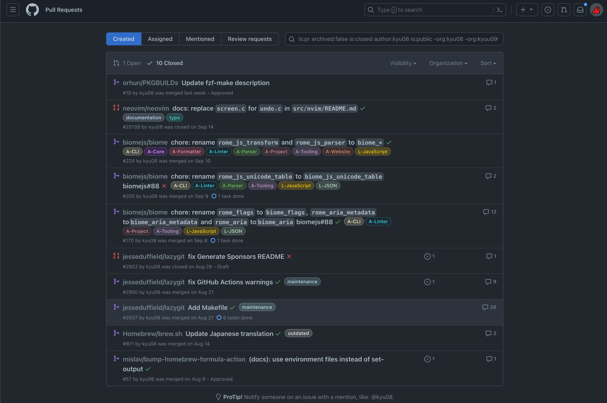

GitHubで自分がOSSに送ったPR一覧を表示するやつ

目次
稀に自分がOSSに送ったPR一覧を見たくなるのでメモ代わりに書く。 (正確には「自分所有でないpublic repositoryに送ったPR一覧」を表示する方法)
tl;dr⌗
https://github.com/pulls
でクエリにis:pr archived:false is:closed author:${user_name} is:public -org:${user_name}を指定して検索する。(openなPRを含めるかなど細かいところはお好みで)
たとえば筆者の場合はis:pr archived:false is:closed author:kyu08 is:public -org:kyu08という感じ。
こんな感じで表示される。

余談⌗
- orgを所属組織とかに絞って検索すれば仕事の振り返りとかにも使えそう。
- 他にも https://github.com/pulls/review-requested にいくと自分がレビュワーとしてアサインされているPR一覧が見れて便利だったりする。ターミナル上で同じようなことをやりたい人は dlvhdr/gh-dash とかもオススメかもしれない。
Read other posts